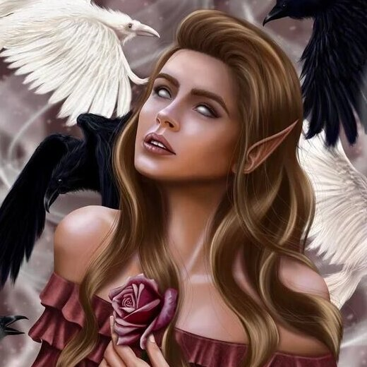
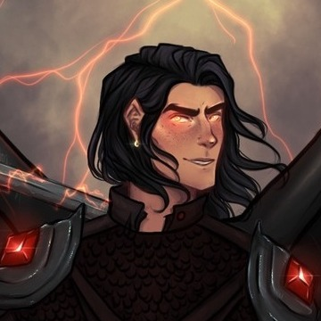
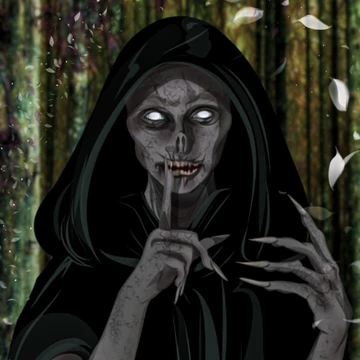
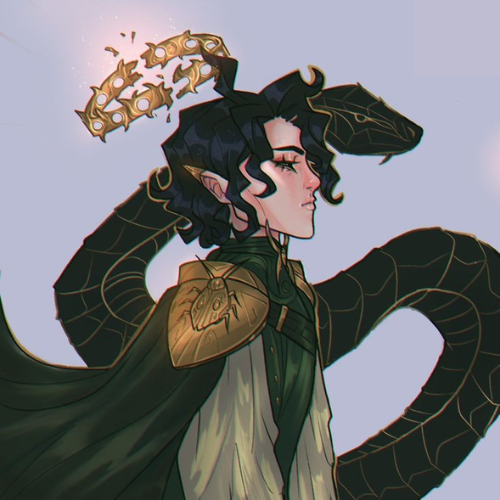

Quando humana foi morta e ressuscitada pelos sete Grão-Senhores como Grã-Feérica, por isso, ela tem os mesmos poderes deles.
Corte Primaveril: Manipulação do Ar e Metamorfose; Corte Estivial: Manipulação d'água; Corte Outonal: Manipulação do Fogo; Corte Invernal: Manipulação do Gelo; Corte Crepuscular: Habilidades de Cura; Corte Diurna: Geração de luz e Quebra de Feitiço; Corte Noturna: Manipulação da Escuridão e Habilidades Daemati.
Nestha Archeron
Foi refeita de humana para Grã-Feérica ao ser jogada dentro do Caldeirão. Nestha ficou com tanta raiva que “roubou” poderes do próprio Caldeirão, que, de acordo com Rhysand, são a “pura morte” e se manifestam na forma de chamas prateadas frias como gelo. Além disso, Nestha possui Vidência, poder dado pelo Caldeirão.
Nestha pode fazer armas mágicas; ela já fez uma espada curta, uma adaga e uma espada longa, que nomeou de Ataraxia (Paz Interior). Nestha também pode usar os 3 Tesouros Nefastos: A Máscara, A Coroa e A Harpa. Além disso, ela tem um conexão com a Mãe.

Elain Archeron
Foi refeita de humana para Grã-Feérica ao ser jogada dentro do Caldeirão.
Elain agradou o Caldeirão o suficiente para ele quebrar sua imparcialidade e presenteá-la com o poder da Vidência, o qual a intensidade permanece um mistério, mas se mostrou muito útil durante a guerra contra Hybern.
Além da Clarividência, Elain pode sentir o Caldeirão e localizar e manipular objetos feitos por Ele.
Rhysand
Conhecido como o Feérico mais poderoso da história de Prythian e o Grão-Senhor da Corte Noturna, os poderes do Rhys são:
Manipulação da Escuridão; Poderes Daemati: Manipulação de Memória e Leitura da Mente; Atravessar: se teletransportar; Enevoar: transformar pessoas em névoa, matando-as.
Por ser metade Illyriano Rhys pode: Voar através de suas asas illyrianas e tem treinamento em Combate Illyriano.

Cassian
É um dos Illyrianos mais poderosos da história de Prythian e o Comandante Geral dos exércitos da Corte Noturna.
Cassian precisa de 7 Sifões vermelhos para canalizar seu poder natural em algo útil (os guerreiros Illyrianos geralmente usam 1 Sifão).
Cassian pode Voar através de suas asas illyrianas e tem treinamento em Combate Illyriano. Ele também pode fazer um Escudo de Sifão e outras mágicas illyrianas.
Azriel
É um dos Illyrianos mais poderosos da história de Prythian e Mestre-Espião do Grão-Senhor da Corte Noturna (Rhysand). Azriel é um Encantador de Sombras, ou seja ele pode controlar sombras, se fundir à elas e se mover (atravessar) por elas.
Além disso, Az é o portador da faca mágica “Reveladora da Verdade” e consegue ouvir e sentir coisas que os outros não conseguem.
Azriel precisa de 7 Sifões azuis cobalto para canalizar seu poder natural em algo útil, pode Voar através de suas asas illyrianas e tem treinamento em Combate Illyriano.
Amren
Imediata dos Governantes da Corte Noturna (segunda no comando), com mais de 15.000 mil anos, Amren é uma ex-detenta da Prisão, que atualmente habita o corpo de uma Grã-Feérica. Poderes:
Manipulação de Ilusões: ela cria ilusões tão reais que pode causar Morte por Ilusão (sensação de asfixia, afogamento e pesadelos); Cura; Destruição de Proteções; Levitação e Multilinguismo: ela fala diversas línguas.
Chama e Luz: Em sua verdadeira forma, Amren é um ser de pura luz e fogo, podendo incinerar qualquer coisa ao seu redor. Essa habilidade tem limitações, pois ela se queimou ao usar muito desse poder.
A própria autora, Sarah J. Maas, confirmou que Amren é um anjo do Antigo Testamento, o que explica sua propensão ao sangue de cordeiro e a falta de desejos pessoais ao ocupar sua verdadeira forma, já que os anjos judeus e cristãos não possuem livre arbítrio.
Morrigan
Morrigan ou Mor é a Terceira no comando da Corte Noturna e supervisiona a dinâmica entre a Corte dos Pesadelos e a Corte dos Sonhos, comandando tanto Velaris quanto a Cidade Escavada.
Suas habilidades não são descritas em detalhes, mas ela é conhecida por ser muito poderosa e pode Atravessar: se teletransportar para qualquer lugar. Mor menciona que seu poder é a Verdade, e é vista usando dons de Cura.
Quando Feyre pergunta a Rhysand o que Mor faz por ele, ele responde que Mor é quem ele chamará quando “os exércitos falharem e Cassian e Azriel estiverem mortos”. As Rainhas Mortais a chamaram de “A Morrigan da Guerra”.
Gwyneth Berdara
Uma sacerdotisa que trabalha na biblioteca de Velaris, amiga de Nestha Archeron e Emerie, Gwyn ajudou a reviver as Valquírias, um clã extinto de mulheres guerreiras. Gwyn é 3/4 Grã-Feérica e 1/4 ninfa do rio.
Como sacerdotisa, Gwyn possui uma Pedra de Invocação, que é semelhante aos Sifões dos Illyrianos, porém, as Pedras das sacerdotisas não podem ser usadas para causar danos, apenas para Cura e Proteção.
Gwyn foi treinada por Cassian e Azriel com técnicas Illyrianas e técnicas das Valquírias. Depois de conseguir Cortar a Fita (ritual das Valquírias) Gwyn se tornou uma Valquíria e, após vencer o Rito de Sangue Illyriano, uma Carynthian (guerreiros de elite dos Illyrianos).
Emerie
É uma Illyriana, dona de uma loja de roupas no Acampamento Refúgio do Vento. Ela é amiga de Nestha Archeron e Gwyneth Berdara e ajudou a reviver as Valquírias, um clã extinto de mulheres guerreiras.
Emerie foi treinada por Cassian e Azriel com técnicas Illyrianas e técnicas das Valquírias. Depois de conseguir Cortar a Fita (ritual das Valquírias) ela se tornou uma Valquíria e, após vencer o Rito de Sangue Illyriano, uma Carynthian.
Emerie, assim como todas as fêmeas Illyrianas, tem as asas multiladas, o que a impede de usá-las para voar e é a primeira e única fêmea Illyriana a participar e vencer o Rito de Sangue (ritual illyriano de guerreiros), se tornando uma guerreira de Elite Illyriana.
Lucien Vanserra
Amigo próximo de Tamlin, o Grão-Senhor da Corte Primaveril, Lucien é filho de um caso extraconjugal da Senhora da Corte Outonal com Helion, o Grão-Senhor da Corte Diurna. Lucien é o Emissário da Corte Primaveril, o Emissário da Corte Noturna e Aliado de Jurian e Vassa, uma das seis Rainhas Mortais que governam as Terras Mortais.
Lucien herdou de sua mãe, a Senhora da Corte Outonal, o poder de Manipulação de Fogo e de seu pai, Helion, o Grão-Senhor da Corte Diurna, o poder de Quebrar Feitiços. Lucien também pode Atravessar e tem dom de Cura.

Suriel
É uma espécie de feéricos malevolentes que são obrigados a responder com sinceridade a qualquer pergunta que lhes seja feita por aqueles que os capturam, eles não podem mentir. O Poder dos Suriel é Conhecimento.
O Suriel capturado por Feyre é apenas um de muitos da mesma espécie e afirma ser mais velho do que Prythian, mais velho do que “os ossos deste mundo”, porém, o Caldeirão é mais velho do que os Suriel.
Os Suriel podem ser encontrados em jovens arvoredos de bétulas nos bosques do oeste, têm uma fraqueza por galinhas recém-abatidas e não podem atravessar água corrente.
Aelin Galathynius
Aelin Ashryver Whitethorn Galathynius, também conhecida como Celaena Sardothien, é a Princesa Perdida, a Rainha de Terrasen e o último membro sobrevivente da linhagem Galathynius.
Aelin é Feérica ou seja ela tem Audição, Velocidade e Cicatrização aprimorada. Além de ser praticamente Imortal.
Aelin tem poder de Manipular Fogo, antes sua magia era ilimitada, mas depois de Reino de Cinzas ela fica apenas com uma única brasa de Magia de Fogo. Aelin também porta, em pouca quantidade, Magia D'Água, que tem dons de Cura.
Dorian Havilliard
Dorian é o Rei de Adarlan e apesar de ser um humano, possui Mágica Pura e Poderosa.
Ele pode usar Força Magicamente Aprimorada, Criação de Blindagem (escudo), Manipulação de Gelo, Vento e Fogo, Detecção de Mentiras e Mãos Mágicas.
Dorian também adquiriu através de uma troca, por seda de aranha, com uma Aranha Estígia, o poder de Metamorfose.
Chaol Westfall
Chaol é o ex-capitão da Guarda Real de Adarlan e atualmente a Mão do Rei, seu melhor amigo, Dorian Havilliard. Ele é humano e marido de Yrene Towers.
Chaol é um Espadachim especialista, tendo treinado com o Mestre de Armas, Theodus Brullo, desde a infância. Chaol tem uma Força e Resistência incríveis uma vez que treinou seu corpo à perfeição. Sua força é tal que ele pode se mover e até mesmo montar um cavalo usando apenas seus braços.
Rowan Whitethorn
Rowan Whitethorn Galathynius é um príncipe feérico, guerreiro, antigo membro do Cadre de Maeve e o Rei-Consorte de Terrasen. Poderes:
Controle e Manipulação de Vento: ele pode fazer brisas frias e quentes. Ele também pode roubar todo o oxigênio do ar por quanto tempo quiser. Controle e Manipulação de Gelo; Criação de Relâmpagos.
Tem Audição, Velocidade e Cicatrização aprimorada. Além de ser praticamente Imortal (não pode envelhecer ou morrer a menos que seja fatalmente ferido); Metamorfose: Rowan tem uma forma animal, que é um gavião de cauda branca. Mesmo nessa forma, ele ainda pode controlar e usar sua magia; Cura.
Manon Bico Negro
Manon Crochan-Bico-Negro é uma bruxa metade Dentes de Ferro, metade Crochan. É a ex-herdeira do Clã de Bruxas Bico Negro e a Rainha das Bruxas. Habilidades:
Imortalidade; Dentes de Ferro, Garras Afiadas e Membranas Oculares que protegem seus olhos (todos retráteis); Vôo: Manon é capaz de voar através de sua serpente alada, Abraxos; Combate: Manon é proficiente em combate usando suas armas de Dentes de Ferro e armamento tradicional.
Além disso, Manon, assim como todas as Bruxas, tem poder mágico inerente que só pode ser liberado na forma da Renúncia, o que a mataria.
Yrene Towers
Yrene Westfall é uma curandeira superdotada do sul de Charco Lavrado que viajou para o Continente do Sul a fim de continuar seu treinamento como curandeira na Torre Cesme. Yrene é humana e esposa de Chaol Westfall. Podes/Habilidades:
Magia de Cura: Yrene possui magia que se manifesta como Cura; Autodefesa: Yrene conhece autodefesa básica, que aprendeu com Aelin em Innish e praticou na Torre Cesme, além de ter ensinado as técnicas as outras curandeiras.
Foi Yrene Towers, com a ajuda de Dorian, seguindo as ordens de Elide, quem matou Erawan com seus dons de Cura.
Lysandra Ennar
Lysandra Ennar Ashryver é uma metamorfa ex-cortesã, a atual Senhora de Caraverre e parceira/esposa de Aedion Ashryver. Um de seus pulsos está marcado com o símbolo do bordel de Madame Clarisse: uma cobra com tinta da meia-noite. A tatuagem foi marcada depois que Lysandra ganhou sua liberdade.
Lysandra é uma Metamorfa, ou seja, ela pode se transformar em qualquer animal ou humano que desejar, porém, ela prefere sua forma de Leopardo Fantasma. No entanto, a marca do bordel permanece em sua pele, independentemente da forma que ela assuma.
Sua aparência real é desconhecida, pois ela mesma se esqueceu de sua aparência, embora se lembre como sendo bastante simples.
Aedion Ashryver
Primo de Aelin Galathynius, serviu como general de Adarlan antes de se reunir com sua prima e juntar-se à sua corte. Ele é o atual General do exército de Terrasen, e o Príncipe de Terrasen e Wendlyn e Senhor de Caraverre. Como o protetor de Terrasen, ele é o atual dono da Espada e do Escudo de Orynth. Habilidades:
Esgrima: Aedion é proficiente em combate militar e luta com espada/outras armas; Liderança: ele é um líder nato, capaz de inspirar seus homens e comandá-los taticamente de forma eficaz. Aedion é Semi-Feérico sendo assim ele possui os Sentidos Aprimorados; Força, Velocidade e Cura Aprimoradas.
Imortalidade sugerida: sendo Semi-Feérico, Aedion tem o direito de passar pelo Acordo, um processo crucial que determina se ele se tornará Imortal.
Elide Lochan
É a atual Senhora de Perranth e membro do Clã de Bruxas Bico-Negro. Ela é parceira/esposa de Lorcan Salvaterre.
Quando criança, machucou gravemente o tornozelo e se tornou aleijada. Ela começou a orar para Anneith, a Deusa das Coisas Sábias e das Mortes Lentas, que começou a orientá-la e a dar-lhe conselhos.
Elide, uma humana com (pouco) sangue de bruxa, ficou responsável por levar uma das 3 Chaves de Wyrd até Aelin e foi quem arquitetou o plano final que derrotou e causou a morte de Erawan. As habilidades de Elide são Astúcia, Inteligência e Enganação; o que a tornam uma excelente mentirosa.
Lorcan Salvaterre
Lorde Lorcan Lochan é o Semi-Feérico mais poderoso que existe e ex-membro do Cadre da Maeve. Atualmente ele é jurado de sangue a Aelin Galathynius, o Senhor de Perranth e o parceiro/marido de Elide Lochan. Poderes/Habilidades:
Magia da Morte: Lorcan possui uma magia muito poderosa, presenteada a ele pelo próprio Deus da Morte, Hellas; Mestre Combatente: Lorcan é incrivelmente habilidoso em combate, tendo treinado como guerreiro durante séculos (quase 6).
Lorcan por ser um Semi-Feérico e não querer viver sem sua companheira, vinculou a sua vida a de Elide, para que assim nenhum deles tenha que viver um só dia sem o outro.
Juliette Ferrars
Nascida Ella Sommers, é a atual Comandante Suprema da América do Norte e esposa de Aaron Warner.
Juliette possui o Toque Letal: sua pele atua como um mecanismo de defesa e “suga” a vida de alguém, gerando uma onda de energia; Superforça: Ella pode destruir materiais inorgânicos, como perfurar concreto e aço, além de causar terremotos ao perfurar o solo. Ella também pode esmagar e até mesmo mover objetos apenas movendo as mãos sem tocá-los. Invulnerabilidade: enquanto ela estiver em estado de Electrum, com seus poderes “ligados”, ela será invulnerável a danos físicos.
Aaron Warner
Era o Comandante Chefe e Regente do Setor 45 e foi o “vilão” no começo da série. Ele é filho do antigo Comandante Supremo da Améria do Norte, Paris Anderson, sendo meio-irmão de Adam e James Kent, e marido de Ella Sommers. Habilidades especiais:
Absorção de Poder: ele pode pegar emprestado os poderes de outras pessoas, absorvendo suas energias; Detecção de Energia: Warner é capaz de sentir a energia dos outros, podendo, através disso, sentir seus sentimentos.
No entanto, não funciona tão eficientemente quando seus próprios sentimentos estão envolvidos.
Kenji Kishimoto
É o melhor amigo de Juliette Ferrars e um membro do Ponto Ômega que trabalhou disfarçado no Setor 45 como soldado. Atualmente Kenji namora com Nazeera Ibrahim. Habilidades especiais:
Invisibilidade: Kenji tem a habilidade de se tornar invisível ou se misturar ao ambiente. Quando ele usa sua habilidade, seu corpo ainda está fisicamente lá, mas os outros não podem vê-lo. Ele é capaz de projetar essa habilidade e tornar os outros invisíveis ao tocá-los.
Mais tarde na série, ele aprende a projetar sua invisibilidade para tornar os outros invisíveis sem a necessidade de contato direto.
Nazeera Ibrahim
É filha do Comandante Supremo da Ásia, sendo irmã de Haider Ibrahim, amiga de infância de Ella Sommers (Juliette) e atualmente namora com Kenji Kishimoto. Habilidades especiais:
Voo: ela tem a habilidade de voar, mas manteve isso em segredo com medo de se tornar apenas mais uma cobaia como o resto dos Não Naturais; Invisibilidade.
Além disso, Nazeera é hábil no Combate corpo a corpo e em Hackear computadores.
Adam Kent
É o irmão mais velho de James Kent e filho do antigo Comandante Supremo da América do Norte, Paris Anderson, sendo meio-irmão de Aaron Warner. Adam conhece Juliette desde os 8 anos e atualmente namora com Ali, uma garota que ele conheceu no Ponto Ômega. Habilidades especiais:
Negação de Poder: Adam tem a habilidade de desabilitar outras habilidades. É por isso que ele geralmente consegue tocar Juliette sem ser ferido e porque Warner não consegue sentir sua energia. Porém, a habilidade não é constante e pode ser desligada tanto pela concentração quanto pela falta dela.
Castle
Castle é o líder e fundador da Ponto Ômega e o pai adotivo de Kenji Kishimoto. Castle desempenha um papel importante no desenvolvimento de Juliette Ferrars e tem a personalidade calma e serena, especialmente nos momentos mais agitados. Habilidades especiais:
Psicocinese: Sua habilidade é extremamente bem desenvolvida e ele pode mover coisas com sua mente em um nível muito alto e avançado.
Winston
É um membro do Ponto Ômega e não acha que seus poderes sejam “legais” ou “úteis”. Winston acha café nojento, mas o bebe, precisando de pelo menos três para ficar meio acordado.
Em Imagina-Me ele se declarou e, após ser correspondido, começou a namorar com Brendan, um homem que ele conheceu no Ponto Ômega e de quem sempre foi a fim. Habilidades especiais:
Flexibilidade: Winston é capaz de se contorcer e esticar qualquer parte do seu corpo à vontade pelo tempo que quiser, desequilibrando as articulações sem qualquer resistência; além disso, Winston tem formação em psicologia.
James Kent
É o filho mais novo do antigo Comandante Supremo da América do Norte, Paris Anderson. Ele é o irmão mais novo de Adam Kent e meio-irmão mais novo de Aaron Warner. James tinha 10 anos no início da série. Habilidades especiais:
Autocura: James tem a capacidade de curar a si mesmo. Este poder foi descoberto por Kenji e Juliette quando ele se cortou em um tijolo e o corte sarou poucos momentos depois.
Jude Duarte
“Se eu não posso ser melhor do que eles. Eu vou me tornar algo muito pior.”
É a Grande Rainha de Elfhame, esposa de Cardan Greenbriar e a atual líder de um grupo de espiões chamado Corte das Sombras, onde é conhecida como A Rainha.
Jude é muito astuta, inteligente e excelente em várias formas de luta, mas sua especialidade é a Esgrima. Jude pratica Mitridatismo a anos, por isso ela é imune a venenos. Por ser humana Jude pode mentir (ao contrário das fadas) o que ela tende a usar em seu benefício. Jude acabou desenvolvendo sede por derramamento de sangue.

Cardan Greenbriar
“Ele será a destruição da coroa e a ruína do trono.”
O Grande Rei de Elfhame é uma fada e marido de Jude Duarte. Ele é cruel, sarcástico, orgulhoso, manipulador, péssimo em Esgrima e, segundo ele, sua qualidade redentora é não ser um assassino. Cardan possui um charme e inteligência, que lhe permitem escapar maliciosamente do perigo e convencer as pessoas a fazer o que ele quiser.
Jude diz que seu Glamour (encantamento) é mais poderoso e sedutor do que o de outras fadas. Cardan é muito bom em fazer papel de bobo para disfarçar sua própria inteligência.
Bomba
Liliver (a Bomba) é uma fada com mais de 100 anos e membro da Corte das Sombras, o grupo de espiões que trabalhou para o Príncipe Dain e agora responde à Grande Rainha de Elfhame, Jude Duarte, de quem é uma grande amiga. Liliver está em um relacionamento com o Barata.
Por ser uma espiã, Bomba é muito astuta e rápida, sempre ansiosa por uma tarefa. Ela gosta de explodir coisas e é muito boa em inventar poções e bombas. A Bomba é incrivelmente leal à Corte das Sombras.
Barata
Van (o Barata) é um goblin com mais de 100 anos e membro da Corte das Sombras, o grupo de espiões que trabalhou para o Príncipe Dain e agora responde à Grande Rainha de Elfhame, Jude Duarte. Van está em um relacionamento com a Bomba.
Van tem os olhos ilegíveis, uma voz melodiosa, completamente em desacordo com seu rosto, e garras afiadas. A Bomba descreveu o Barata como sendo tão afável, tão elegante e charmoso, que enganava as pessoas na cara delas, sem precisar de magia. Van é um excelente estrategista, sendo capaz de considerar todos os aspectos de um plano, grandes e pequenos.
Fantasma
Larkin Gorm Garret (o Fantasma) é um meio-fada, meio-humano e membro da Corte das Sombras, o grupo de espiões que trabalhou para o Príncipe Dain e agora responde à Grande Rainha de Elfhame, Jude Duarte.
O Fantasma está disposto a seguir ordens, mesmo que essas ordens sejam moralmente erradas. Ele é inteligente e habilidoso em se esgueirar silenciosamente e gosta de se divertir durante seu trabalho. Ele ficou feliz quando Jude disse que embora eles não precisem ser bons, eles deveriam tentar ser justos.
Nicasia
É uma fada e princesa do Reino Submarino, sendo filha da Rainha Orlagh. Ela era membro do círculo íntimo de amigos de Cardan Greenbriar, além de ser a sua ex-amante. Atualmente, ela e Cardan são amigos, porém Nicasia ainda nutre sentimentos por Cardan e é vista sentindo ódio por Jude, pelo fato de Cardan amá-la.
A cor dos cabelos dela muda e escurece de acordo com seu humor, e quando está submersa na água, suas pernas são substituídas por uma longa cauda. Nicasia é constantemente cruel com os outros, especialmente com aqueles que têm um status inferior ao dela, achando que pode escapar impune porque é filha de uma rainha.
Nicasia é muito ciumenta e egocêntrica. Sua raiva a torna perigosa. Ela gosta de causar miséria às fadas que vivem na terra.
Madoc
“O poder é muito mais fácil de adquirir do que manter.”
É um Redcap e ex-Grande General de Elfhame sob o governo do Grande Rei Eldred. Ele é o pai adotivo de Jude Duarte.
Madoc é muito protetor com sua família, mas também é muito ambicioso, astuto e implacável. Ele gosta de derramamento de sangue e o usa para atingir seus objetivos. Como um Redcap, Madoc mergulha sua capa no sangue daqueles que matou, a guerra fazendo parte de sua natureza.
Oak explica que Madoc sempre desejou a conquista, não pelo poder, mas pela luta em si.
Locke
“Você me ama o suficiente para chorar por mim?”
Era uma fada e membro do círculo íntimo de amigos de Cardan Greenbriar.
Locke era tão astuto quanto uma raposa e muito manipulador. Ele gostava de teatro e de fazer parte da história. Locke mencionou que não se importava em criar sua própria história se não houvesse uma boa o suficiente. Ele ansiava por experiências dramáticas e entretenimento. Cardan o descreveu como tendo “um apetite infinito por diversão”.
Locke foi assassinado por sua própria esposa, Taryn Duarte.